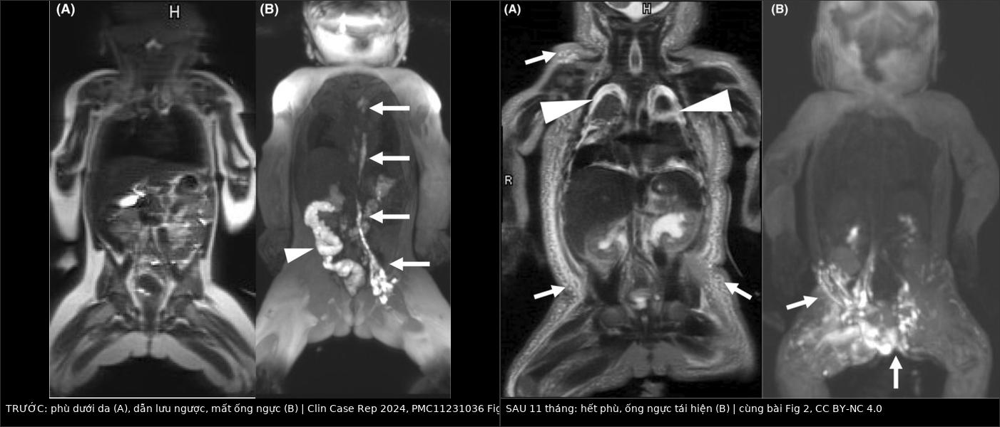
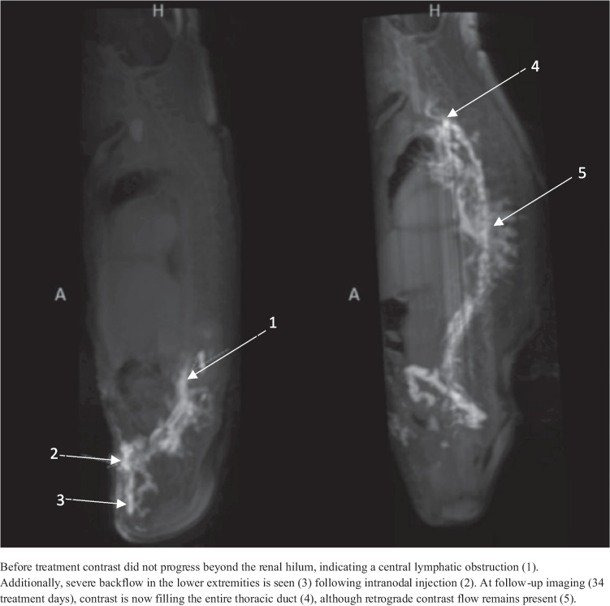
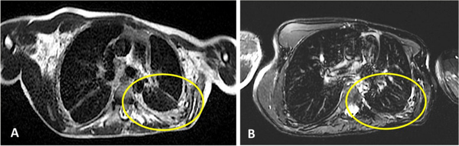

1823 — Trametinib (ức chế MEK) trong dị dạng bạch huyết do đột biến RAS/MAPK: chọn bệnh nhân theo gen, liều, theo dõi độc tính và đọc đáp ứng trên DCMRL / Trametinib for RAS/MAPK-driven lymphatic malformations
Tags: pattern:loansan-bach-huyet pattern:tran-duong-trap pattern:dap-ung-dieu-tri pattern:doc-tinh-thuoc vung:da-he vung:trung-that vung:phoi score:CTCAE score:Likert-6 protocol:DCMRL protocol:MRI-T2-mDixon incidentaloma:khong
Mức chắc chắn (certainty): tổng hợp y văn (literature synthesis) — số liệu lấy từ 6 nhũ nhi Noonan dùng trametinib có DCMRL trước–sau 1 năm (PMC13415930, CC BY 4.0), 7 nhũ nhi CCLA (PMC12367942, CC BY 4.0), ca trẻ đẻ non 31 tuần (PMC11231036, CC BY-NC 4.0), thử nghiệm pha II TRAM-01 ở NF1 (PMC13550690, CC BY 4.0 — dùng làm mốc an toàn/liều), tổng quan có hệ thống 52 nghiên cứu nhi (PMC13446942, CC BY-NC-SA 4.0), loạt 5 trẻ KLA/GLA (PMID 41116710) và ca người lớn rhabdomyolysis (PMC7041078, CC BY 4.0). Toàn bộ là dữ liệu nghiên cứu, không phải khuyến cáo thay thế phác đồ đơn vị.
Bài này là phần "thuốc đích" của 1808. 1808 dạy theo dõi sirolimus và chỉ nêu trametinib như một hàng "chuyển thuốc". Bài này trả lời bốn câu hỏi còn trống: (1) chọn ai — gen nào, hình ảnh nào; (2) liều nào ở sơ sinh và trẻ nhỏ; (3) theo dõi độc tính gì, ngưỡng nào; (4) đọc "đáp ứng" thế nào khi ống ngực trên DCMRL vẫn bất thường.
1. Tổng quan bệnh học – cơ chế hình ảnh
- Trametinib ức chế cái gì: thuốc ức chế MEK1/2 (mitogen-activated protein kinase kinase), chặn phosphoryl hóa ERK1/2 — điểm cuối của đường RAS→RAF→MEK→ERK. Trong hệ bạch huyết, ERK hoạt hóa quá mức làm giãn mạch bạch huyết, ức chế trưởng thành van bạch huyết và gây thoái triển van; trên mô hình chuột mang đột biến KRAS, ức chế MEK ngăn van thoái triển và giảm đường kính mạch (PMC11231036, phần bàn luận). Đây là lý do hiệu quả lâm sàng đến trước, "hình thể" đến sau: dòng chảy được phục hồi nhờ chức năng van, không phải nhờ mọc lại ống ngực mới.
- TẠI SAO phải chọn theo gen: hai đường song song cùng gây dị dạng bạch huyết — PI3K/AKT/mTOR (PIK3CA, TEK/TIE2) và RAS/MAPK (PTPN11, RIT1, SOS1, RAF1, KRAS, NRAS, BRAF, ARAF, CBL). PIK3CA chiếm tới ~80% dị dạng bạch huyết thông thường và là đích của sirolimus/alpelisib; KLA thiên về NRAS p.Q61R (10/11 ca trong một loạt giải trình tự) và là nhóm thất bại sirolimus, phải chuyển ức chế MEK (PMC7539180, trích trong 1808). Bệnh Noonan thể dịch bạch huyết: PTPN11 ~50–60%, sau đó RIT1, SOS1, RAF1, KRAS (PMC13415930).
- TẠI SAO hình ảnh đổi theo kiểu "dịch trước, mô sau": phù và tràn dịch là nước tự do → T2/T2 mDixon (ảnh nước) tăng tín hiệu rất mạnh, T1 giảm, không hạn chế khuếch tán (ADC cao); khi dòng chảy được tái lập, nước rút trong vài tuần nên T2 là chỉ số đáp ứng sớm nhất, trước khi bất kỳ thay đổi thể tích mô nào xuất hiện.
- TẠI SAO DCMRL mới là "chìa khóa", không phải CT: CT chỉ thấy dịch; DCMRL (dynamic contrast-enhanced MR lymphangiography) tiêm gadolinium trực tiếp vào hạch bẹn nên nhìn được đường đi và chiều của dòng bạch huyết: thuốc dừng ở bể dưỡng trấp/ngang mức động mạch thận = tắc dẫn lưu trung tâm; thuốc đi ngược ra da, thành ngực, phế quản, màng phổi = dẫn lưu ngược (dermal backflow, chylo-lymphatic reflux); thuốc lên tới tĩnh mạch dưới đòn/cảnh = dẫn lưu trung tâm đã thông (PMC12367942, PMC13415930).
- Định lượng phải nhớ:
- Dịch tễ: dị dạng bạch huyết 1/2.000 trẻ sinh sống (PMC9249683, trích trong 1808); bệnh bạch huyết trong Noonan 37% trong đời (dẫn trong PMC11231036).
- Liều: khởi đầu ở nhũ nhi 0,01 mg/kg/ngày (PMC12367942), 0,0125 mg cách ngày rồi tăng dần, liều hiệu quả ghi nhận 0,018 mg/kg/ngày (PMC11231036), 0,02 mg/kg/ngày ở 6 nhũ nhi Noonan (PMC13415930); liều chuẩn nhi khoa 0,025 mg/kg/ngày (≥ 6 tuổi) và 0,032 mg/kg/ngày (< 6 tuổi), tối đa 2 mg/ngày (TRAM-01, PMC13550690).
- Hiệu quả ở nhũ nhi CCLA/Noonan: 5/6 rút được ống dẫn lưu màng phổi sau 6 tuần (PMC13415930); 6/7 rút trong 5–13 ngày, không tái phát trong 10,3 tháng theo dõi trung bình (PMC12367942); ca đẻ non rút 2 ống ngực ngày 23 và 38 sau khởi thuốc, cai máy ngày 42, bỏ dinh dưỡng tĩnh mạch ngày 45 (PMC11231036).
- Hiệu quả ở KLA/GLA: 5 trẻ (trung vị 9 tuổi) — 80% đáp ứng một phần trên hình ảnh, tiểu cầu tăng 54–362%, D-dimer giảm > 91%, chỉ 1 ca phát ban độ 2; 80% có NRAS nhưng vẫn có ca đáp ứng không tìm thấy đột biến (PMID 41116710).
- Mốc an toàn (NF1, cùng liều): 46 ca, đáp ứng 47,8%, thể tích trung vị −19,3%, 32,6% phải giảm liều vì độc tính da/niêm, 6,5% ngừng hẳn (paronychia, phù toàn thân, viêm phổi), sau khi ngừng 32,6% cần can thiệp mới, trung vị 10 tháng mới phải dùng lại (TRAM-01, PMC13550690).
2. Mẫu hình + chẩn đoán phân biệt theo vị trí (gamut)
- Mẫu hình 1 — CCLA ở nhũ nhi (Noonan/RAS): thai có hydrops, tràn dịch màng phổi hai bên, đa ối; sau sinh tràn dưỡng trấp kháng trị dù đã MCT-diet + octreotide + propranolol. MRI: phù dưới da + tràn dịch màng phổi/màng tim, phổi dày vách tiểu thùy. DCMRL: không thấy ống ngực, thuốc dừng ở bể dưỡng trấp, dẫn lưu ngược ra da/thành ngực/phế quản. Đây là nhóm đáp ứng trametinib rõ nhất (PMC13415930, PMC12367942, PMC11231036).
- Mẫu hình 2 — KLA/GLA lan tỏa: trung thất – phổi – lách – xương cùng lúc; tiểu cầu thấp, D-dimer cao, chảy máu; MRI ngực dày vách tiểu thùy + thâm nhiễm; KLA có sống sót toàn bộ chỉ 34% dù điều trị đa mô thức (PMC7539180, trích trong 1808). Trametinib có vai trò khi NRAS/KRAS hoặc thất bại sirolimus.
- Mẫu hình 3 — dị dạng bạch huyết sau tuần hoàn Fontan: phế quản dạng nhựa (plastic bronchitis), protein-losing enteropathy, tràn dưỡng trấp; DCMRL thấy dẫn lưu ngược vào phế quản. Xem 6126; nhóm này không phải chỉ định trametinib thường quy — phải loại trừ nguyên nhân huyết động trước.
- Mẫu hình 4 — LM đa nang khu trú (cổ–mặt, sau phúc mạc): nang T2 rất sáng, không ngấm lòng nang, không có dẫn lưu ngược trung tâm; đích điều trị là sirolimus/alpelisib và chọc xơ hóa, không phải ức chế MEK nếu không có đột biến RAS.
- Gamut theo vị trí tổn thương đích (đo bằng T2 mDixon ảnh nước): trung thất (dày vách, khối thâm nhiễm) → màng phổi (tràn dịch, độ dày màng phổi) → phổi (lymphangiectasia, dày vách tiểu thùy) → màng tim (tràn dịch) → phúc mạc (cổ trướng dưỡng trấp) → mô mềm/thành ngực (phù).
- Gợi nhớ 4 chữ — GEN–DOSE–DRAIN–FLOW: Gen (RAS/MAPK hay PIK3CA) · Dose (0,01 → 0,02 → 0,025 mg/kg/ngày) · Drain (số ống dẫn lưu, mL/ngày, ngày rút) · Flow (DCMRL: thuốc tới tĩnh mạch chưa). Trả lời đủ 4 chữ là ra quyết định khởi – tăng – ngừng.
3. Bảng so sánh phân biệt (ma trận đối chiếu)
| Thực thể (entity) | Hình ảnh điển hình | Chốt vào (rule-in) | Chốt loại (rule-out) | Gợi ý xác nhận |
|---|---|---|---|---|
| CCLA đáp ứng ức chế MEK | Phù dưới da + tràn dưỡng trấp; DCMRL không thấy ống ngực, thuốc dừng ở bể dưỡng trấp, dẫn lưu ngược ra da/phế quản | Đột biến RAS/MAPK (PTPN11, RIT1, SOS1, KRAS, NRAS, BRAF) + tràn dưỡng trấp kháng trị + DCMRL có dẫn lưu ngược, và giảm dịch trong 6 tuần sau khởi thuốc (PMC13415930) | PIK3CA đơn thuần, không có dẫn lưu ngược trung tâm, hoặc dịch do suy tim/tăng áp phổi → không phải đích MEK | Giải trình tự mô/dịch; DCMRL trước điều trị làm mốc; đếm mL dịch/ngày |
| CCLA không rõ gen | Cùng hình ảnh DCMRL, không tìm được đột biến | Kiểu hình CCLA + không có biến thể vẫn có thể đáp ứng — 80% ca KLA/GLA đáp ứng một phần dù chỉ 80% có NRAS (PMID 41116710) | Nếu không đáp ứng sau 6–8 tuần ở liều đủ → xem lại chẩn đoán, không tăng liều mù | Thử điều trị có theo dõi (n-of-1), ghi rõ trong hồ sơ |
| KLA (NRAS) | Thâm nhiễm trung thất–phổi, ly giải xương, lách; tiểu cầu thấp, D-dimer cao | NRAS p.Q61R + tiểu cầu giảm/đông máu rối loạn + DCMRL bất thường | Chỉ nang lách đơn thuần, không rối loạn đông máu → GLA/LM, không phải KLA | Giải trình tự; CTM + D-dimer; DCMRL |
| GLA (PIK3CA) | Nhiều ổ ly giải tủy + nang lách, tràn dịch | PIK3CA hoặc không đột biến RAS, tổn thương nhiều cơ quan | Có NRAS/KRAS và rối loạn đông máu → nghĩ KLA | Gen; WB-MRI T2 fat-sat |
| Dẫn lưu ngược do bệnh vs do kỹ thuật | Cả hai đều làm thuốc ra da/thành ngực trên DCMRL | Dẫn lưu ngược theo đường bạch huyết liên tục, tái hiện ở thì muộn | Ngấm thuốc tĩnh mạch sớm, hình ống thẳng, xuất hiện ngay → kim nằm trong tĩnh mạch, không phải dẫn lưu ngược (2,2% ca, PMC12165905) | Xác nhận kim bằng 0,5–1 mL nước muối làm căng hạch trên siêu âm; bơm chậm 0,5 mL/phút |
| Đáp ứng thật vs thuốc chỉ làm hết phù | T2 mDixon giảm phù, tràn dịch giảm | Dịch ra ít đi + rút được ống dẫn lưu + DCMRL có thuốc tới tĩnh mạch | Ống ngực vẫn bất thường không loại trừ đáp ứng: sau 1 năm, 1/6 vẫn mất ống ngực, 5/6 vẫn thiểu sản một phần dù hết tràn dịch (PMC13415930) | So DCMRL thì muộn với baseline; đánh giá chức năng, không chỉ hình thể |
| Độc tính da do thuốc vs nhiễm trùng da | Ban đỏ, khô, nứt ở nếp gấp, quanh móng | Ban đối xứng, xuất hiện sau tăng liều, không sốt, đáp ứng corticoid bôi (viêm da cơ địa 3/6 ca, PMC13415930) | Ban một bên + sốt + đau + bạch cầu tăng → cellulitis/áp-xe, cần kháng sinh | Soi da; thử hạ 1 bậc liều; cấy nếu có mủ |
| Men gan tăng do thuốc vs do bệnh/truyền máu | AST/ALT tăng nhẹ, không vàng da | Tăng sau khởi thuốc, tự về khi giảm liều/ngắt, bilirubin bình thường (AST tối đa 91 U/L ở ca 31 tuần, PMC11231036) | Bilirubin tăng + INR tăng → tổn thương gan thật, không phải "transaminase thoáng qua" | AST/ALT, bilirubin, INR mỗi 2–4 tuần giai đoạn đầu |

*Trái (A,B): trước trametinib — (A) T2 vành: phù dưới da lan rộng; (B) DCMRL: dẫn lưu ngược ra da (đầu mũi tên), các đường bạch huyết bất thường ở bụng–chậu (mũi tên), không thấy ống ngực. Phải (A,B): sau 11 tháng — (A) hết phù, không còn tràn dịch; (B) ống ngực và các mạch chậu hiện rõ, hết dẫn lưu ngược. Nguồn: Clin Case Rep 2024 (PMC11231036), Fig. 1 và Fig. 2, CC BY-NC 4.0; ghép bằngtools/make_composite.py (letterbox, không crop/kéo giãn).*
Ba dấu hiệu đọc kỹ trên DCMRL theo dõi
- Điểm dừng của thuốc là dấu hiệu định vị tắc: dừng ở bể dưỡng trấp = tắc ống ngực; dừng ngang mức động mạch thận = tắc cao hơn, thường kèm thiểu sản ống ngực (PMC12367942).
- Dẫn lưu ngược có thứ tự: ngực → phế quản → màng phổi ở CCLA; bụng → bẹn → bìu/chi dưới khi tắc cao. Ghi mức độ theo thang 6 bậc để so lần sau.
- Thuốc tới tĩnh mạch = mốc thành công về chức năng: trong ca CCLA, thuốc chỉ tới bể dưỡng trấp trước điều trị, sau 34 ngày đã đổ đầy toàn bộ ống ngực — dù vẫn còn ít dòng ngược (PMC12367942).
4. Protocol chụp + phân độ + sơ đồ xử trí
- DCMRL — kỹ thuật (theo 2 đơn vị có số liệu; phân loại CCLA chi tiết ở 1822):
- Tiền mê/ngủ sâu: 107/116 (92,2%) ca nhi phải ngủ sâu — trẻ nhỏ không nằm yên đủ 45 phút (PMC12165905).
- Chọc hạch bẹn dưới siêu âm: đầu dò linear 18 MHz, kim 22 G, chọc vào vùng chuyển tiếp vỏ–rốn hạch; hạch trung bình 2,5 ± 1,2 mm, không đặt ngưỡng kích thước tối thiểu (PMC12165905).
- Xác nhận vị trí kim: bơm 0,5–1 mL nước muối sinh lý, thấy hạch căng lên là đúng — 230/230 (100%) ca căng hạch, thành công kỹ thuật 229/230 (99,6%), thành công ngay lần đầu 228/230 (99,2%) (PMC12165905).
- Thuốc: gadobutrol 1,0 mmol/mL pha 1:1 (hoặc 1:4) với nước muối, bơm liên tục 0,5 mL/phút (PMC13415930, PMC12165905).
- Chuỗi xung: 3D T2 nặng T2 tự thở (TR 3.000 ms, TE 600 ms, FA 90°, FOV 400 mm, voxel 1,2 mm đẳng hướng, thời gian 4:45) + T1 3D gradient-echo đa echo động học vành, lặp lại nhiều pha (PMC13415930). Hệ 1,5 T hoặc 3 T đều dùng được.
- Bẫy kỹ thuật: ngấm thuốc tĩnh mạch kèm theo ở 5/230 (2,2%) — kim lạc vào tĩnh mạch; đừng đọc là "shunt" hay "rò" (PMC12165905).
- MRI T2 — giao thức theo dõi (không cần cản quang): T2 mDixon ảnh nước hoặc T2 fat-sat/STIR ngực–bụng, 2 mặt phẳng; đo độ dày màng phổi, mức tràn dịch, phù thành ngực, lymphangiectasia phổi. Chụp baseline, 6 tuần, 3 tháng, rồi mỗi 3–6 tháng; DCMRL lặp sau 1 năm hoặc khi quyết định ngừng (PMC13415930).
- Thang đo đáp ứng (dùng thống nhất trong hồ sơ): Likert 6 bậc 0–5 (0 = không có, 5 = lan rộng) cho phù thành ngực, lymphangiectasia phổi, tràn dưỡng trấp, cổ trướng, dẫn lưu ngược — trong 6 nhũ nhi, trung vị tràn dưỡng trấp và lymphangiectasia 3 (2–4), dẫn lưu ngược vào liên sườn/trung thất/phế quản 3 đều giảm còn 1 – 1,5 – 1 sau 1 năm (PMC13415930). Với tổn thương đặc/đo được, dùng thể tích 3D: PR giảm ≥ 20%, PD tăng ≥ 20% (tiêu chí đã dùng ở 1808).
- Theo dõi an toàn (lịch tối thiểu):
- Trước và trong 2 tuần đầu: CTM, AST/ALT, bilirubin, INR, CK, creatinine, điện giải, glucose; siêu âm tim (LVEF) làm mốc; khám da, móng, miệng.
- Mỗi 1–3 tháng: CTM, AST/ALT, CK, siêu âm tim; nhãn khoa (thị lực, đáy mắt) khi có triệu chứng hoặc định kỳ; đo chiều cao/cân nặng.
- Ngưỡng độc tính (CTCAE): CK độ 3 = > 5–10 × ULN kèm đau cơ; ca người lớn ghi nhận CK 332 U/L (độ 1) → 2.247 U/L (độ 3), myoglobin niệu 1.400 ng/mL (bình thường < 10), nước tiểu sẫm màu — ngừng thuốc, truyền dịch, hồi phục, và dùng lại liều giảm an toàn (PMC7041078). Trẻ nhỏ không tự báo đau cơ → phải hỏi phụ huynh về đi loạng choạng, không chịu đi, nước tiểu sẫm.
- Da/niêm: viêm da cơ địa 3/6 (PMC13415930), ban dạng trứng cá, paronychia, viêm miệng là lý do giảm liều ở 32,6% và ngừng thuốc ở 6,5% trong TRAM-01 (PMC13550690). Viêm phổi kẽ/pneumonitis là một trong 3 lý do ngừng — hình ảnh kính mờ mới hai bên, không sốt trên HRCT.
- Liều — bậc thang thực hành (dữ liệu nghiên cứu): sơ sinh/nhũ nhi 0,01 mg/kg/ngày → 0,0125 mg/ngày (có thể cách ngày 2 tuần đầu) → 0,02 mg/kg/ngày; trẻ ≥ 6 tuổi 0,025 mg/kg/ngày, < 6 tuổi 0,032 mg/kg/ngày, tối đa 2 mg/ngày; giảm 50% khi độc tính độ 2 kéo dài, ngắt khi độ 3–4 (PMC12367942, PMC13415930, PMC13550690).
- Khi nào phối hợp với sirolimus: khi hai đường cùng bị kích hoạt (PIK3CA + RAS) hoặc đơn trị thất bại. Ca 16 tuổi CLA: sirolimus rồi trametinib đơn trị đều thất bại, phối hợp liều thấp mới cải thiện — oxy 2 L/phút 24 giờ + BiPAP 8 giờ/đêm → giảm nhu cầu oxy, FEV1 600 mL (22%) cải thiện, dày màng phổi trên MRI giảm sau 4 năm (PMC11097431). Phối hợp không làm tăng độc tính trong ca này nhưng chưa có thử nghiệm.
flowchart TD
A[Trẻ tràn dưỡng trấp hoặc phù kháng trị] --> B[Loại trừ suy tim, tắc tĩnh mạch, nhiễm trùng]
B --> C[MRI T2 mDixon + DCMRL baseline]
C --> D{Có đột biến RAS hoặc MAPK ?}
D -- Có --> E{Khởi trametinib theo tuổi<br/>0,01 đến 0,032 mg trên kg mỗi ngày}
D -- Không --> F{PIK3CA hoặc chưa rõ gen ?}
F -- PIK3CA --> G[Sirolimus hoặc alpelisib<br/>theo bài 1808]
F -- Chưa rõ --> H[Thử trametinib có theo dõi<br/>ghi rõ trong hồ sơ]
E --> I[Theo dõi 6 tuần: mL dịch, số ống dẫn lưu, T2]
H --> I
I --> J{Dịch giảm và rút được ống ?}
J -- Có --> K[Tăng dần tới liều đích<br/>DCMRL lặp sau 1 năm]
J -- Không --> L[Kiểm tra tuân thủ, liều, tương tác thuốc<br/>xem lại chẩn đoán]
K --> M{Độc tính độ 3 hoặc 4 ?}
M -- Không --> N[Tiếp tục, khám mỗi 3 tháng]
M -- Có --> O[Ngắt thuốc, hồi phục rồi giảm 50 phần trăm liều]
O --> P{Tái diễn độc tính ?}
P -- Có --> Q[Ngừng hẳn, chuyển phương án khác]
P -- Không --> N
5. Biến thể bình thường và cạm bẫy
- Cạm bẫy 1 — "không thấy ống ngực = không có ống ngực": dòng chảy quá chậm/quá ít cũng làm ống ngực không hiện trên DCMRL; chính nhóm tác giả ca 31 tuần ghi rõ khả năng này và vẫn chẩn đoán CCLA dựa trên dẫn lưu ngược + bối cảnh Noonan (PMC11231036). Thiếu ống ngực trên một lần chụp không đủ để kết luận teo bẩm sinh.
- Cạm bẫy 2 — đọc "ngấm thuốc tĩnh mạch" thành shunt: 2,2% ca có ngấm tĩnh mạch do kim lạc vào tĩnh mạch (PMC12165905). Dấu phân biệt: xuất hiện ngay thì đầu, hình ống đều, đi thẳng lên tĩnh mạch chủ — không phải dẫn lưu ngược theo đường bạch huyết.
- Cạm bẫy 3 — chờ ống ngực "bình thường" mới tin thuốc có tác dụng: sau 1 năm trametinib, 1/6 vẫn mất ống ngực, 5/6 vẫn thiểu sản một phần, nhưng tràn dưỡng trấp gần hết và dẫn lưu ngược giảm mạnh (PMC13415930). Đánh giá đáp ứng bằng chức năng + dịch, không bằng hình thể ống ngực.
- Cạm bẫy 4 — tăng liều khi "chưa đáp ứng" trong 2 tuần đầu: trong loạt 7 nhũ nhi, 6/7 rút được ống dẫn lưu trong 5–13 ngày nhưng 1 ca tái phát đối bên và cần 42 ngày dẫn lưu thêm (PMC12367942). Tái phát một bên trong giai đoạn đầu không đồng nghĩa thất bại — đánh giá lại ở 6 tuần.
- Cạm bẫy 5 — bỏ sót rhabdomyolysis ở trẻ nhỏ: trẻ không báo đau cơ; dấu hiệu duy nhất có thể là nước tiểu sẫm, quấy, không chịu đi. Ca người lớn cho thấy CK chỉ 332 U/L lúc đầu (độ 1) rồi 2.247 U/L sau 4 tuần — một lần CK bình thường không loại trừ (PMC7041078). Phải hỏi triệu chứng mỗi lần khám và đo CK khi có bất kỳ dấu hiệu cơ.
- Cạm bẫy 6 — nhầm viêm da cơ địa do thuốc với nhiễm trùng: 3/6 nhũ nhi có viêm da cơ địa (kèm dị ứng đậu phộng/đậu nành ở 1 ca, keratosis pilaris ở 1 ca), 1 ca phải giảm còn 0,01 mg/kg/ngày; không sốt, đối xứng, đáp ứng corticoid bôi (PMC13415930). Sốt + ban một bên + đau → cellulitis, xử trí khác.
- Cạm bẫy 7 — dùng trametinib cho "mọi" dị dạng bạch huyết: PIK3CA chiếm phần lớn LM thông thường; dùng MEK khi chưa có bằng chứng RAS không có cơ sở sinh học và bỏ lỡ sirolimus/alpelisib. Ngược lại, 80% ca KLA/GLA đáp ứng dù chỉ 80% có NRAS (PMID 41116710) — nên không loại trừ bệnh nhân chỉ vì không tìm thấy đột biến, nhưng phải ghi rõ đây là thử điều trị.
- Cạm bẫy 8 — ngừng thuốc đột ngột sau khi hết dịch: sau 18 chu kỳ ở NF1, 32,6% cần can thiệp mới, trung vị 10 tháng sau ngừng (PMC13550690). Với CCLA, dữ liệu tái phát sau ngừng chưa rõ — nên hạ liều và theo dõi 3 tháng/lần trong năm đầu, không ngừng rồi biến mất khỏi theo dõi.
- Biến thể bình thường dễ nhầm: hạch bẹn nhỏ 1–2 mm vẫn chọc được và là đích chuẩn cho DCMRL (không phải bệnh lý); giãn nhẹ ống ngực sau bữa ăn nhiều mỡ; phù thành ngực nhẹ sau tháo ống dẫn lưu — đừng gọi là tiến triển.
6. Tự lượng giá — Blind Quiz
Ca 1 — Bé trai đẻ non 31 tuần 4 ngày, bệnh Noonan (PTPN11), hydrops thai nhi, tràn dưỡng trấp hai bên kháng trị; 2 ống dẫn lưu, 300–350 mL/ngày. DCMRL ngày 23 và ảnh sau 11 tháng ở hình dưới. Bạn đọc gì, và điều gì chứng minh thuốc có tác dụng?
- Hỏi: (1) Mô tả (A) và (B) trước điều trị. (2) Sau 11 tháng, dấu hiệu nào là quan trọng nhất? (3) T2 bình thường nhưng DCMRL còn bất thường thì kết luận thế nào?
Bấm để hiện đáp án (findings + chẩn đoán)
- Findings trước: (A) T2 vành — phù dưới da lan rộng, tràn dịch màng phổi; (B) DCMRL — không thấy ống ngực, dẫn lưu ngược ra da (đầu mũi tên), các đường bạch huyết bất thường ở bụng–chậu và dòng ngược ra bìu.
- Sau 11 tháng: hết phù, hết tràn dịch; DCMRL thấy mạch chậu và ống ngực bình thường, không còn dẫn lưu ngược — đây là phục hồi chức năng dẫn lưu, không phải "mọc lại giải phẫu".
- Kết luận: CCLA do Noonan đáp ứng trametinib. Điều chứng minh tác dụng là dòng thuốc tới tĩnh mạch trên DCMRL + rút được ống dẫn lưu (ngày 23 và 38 sau khởi thuốc) + cai máy ngày 42, không phải chỉ "hết phù".
- Liều trong ca: khởi 0,0125 mg cách ngày, tăng hằng ngày sau 2 tuần, tối đa 0,018 mg/kg/ngày; ngừng ở 12 tháng, 18 tháng không tái phát; AST tối đa 91 U/L, ALT 42 U/L, không bệnh cơ tim phì đại (PMC11231036).
- Nguồn: Clin Case Rep 2024 (PMC11231036), Fig. 1–2, CC BY-NC 4.0.
Ca 2 — Bé gái 2 tháng tuổi, CCLA, tràn dưỡng trấp kháng trị, khởi trametinib 0,01 mg/kg/ngày (ngày thứ 27 của đời). DCMRL trước và sau 34 ngày điều trị ở hình dưới. Thuốc có tác dụng chưa, và dựa vào đâu?

- Hỏi: (1) Vì sao thuốc dừng ở ngang mức rốn thận? (2) Sau điều trị, cấu trúc nào xuất hiện? (3) Còn dòng ngược thì có phải thất bại?
Bấm để hiện đáp án (findings + chẩn đoán)
- Findings trước: thuốc chỉ tới ngang mức rốn thận (1) — tắc dẫn lưu trung tâm; dẫn lưu ngược nặng ở chi dưới (3) sau khi tiêm vào hạch bẹn (2). Không thấy ống ngực.
- Sau 34 ngày: thuốc đổ đầy toàn bộ ống ngực (4) — dẫn lưu trung tâm đã thông; vẫn còn ít dòng ngược (5).
- Kết luận: có tác dụng — tiêu chí là thuốc tới được ống ngực/tĩnh mạch, không phải "hết hoàn toàn dòng ngược". Trong loạt này, thuốc tới tĩnh mạch dưới đòn/cảnh ở 2 ca được chụp lại; 6/7 ca rút ống dẫn lưu trong 5–13 ngày (PMC12367942).
- Phản biện: đây là ca nguyên văn, loạt rất nhỏ (7 nhũ nhi) — không dùng để khái quát tỉ lệ đáp ứng.
- Nguồn: Eur J Pediatr 2025 (PMC12367942), Fig. 2, CC BY 4.0.
Ca 3 — Nam 16 tuổi, dị dạng bạch huyết phức tạp: ly giải xương sườn 4 và xương vai, tràn dưỡng trấp hai bên, hạn chế hô hấp nặng (FEV1 22% dự đoán), phụ thuộc oxy 2 L/phút 24 giờ. Sirolimus rồi trametinib đơn trị đều thất bại. MRI T2 ngực 2018 và 2022 ở hình dưới. Bạn làm gì tiếp?

- Hỏi: (1) Khoanh vàng đánh dấu gì, thay đổi ra sao? (2) Vì sao đơn trị thất bại mà phối hợp lại hiệu quả? (3) Theo dõi gì khi dùng 2 thuốc?
Bấm để hiện đáp án (findings + chẩn đoán)
- Findings: (A) 2018 — dày màng phổi + thâm nhiễm/dày vách vùng đáy phổi trái (vòng vàng); (B) 2022 — giảm rõ độ dày màng phổi và thâm nhiễm cùng vùng, kèm giảm nhu cầu oxy.
- Vì sao phối hợp: tổn thương có cả hai đường (PI3K/AKT/mTOR và RAS/MAPK); ức chế một đường thì đường kia bù trừ. Ca này: sirolimus mất tác dụng dần, trametinib đơn trị không đủ, phối hợp liều thấp kiểm soát được bệnh mà không tăng độc tính (PMC11097431).
- Theo dõi: T2 mDixon/STIR ngực mỗi 6–12 tháng, FEV1/TLC, nhu cầu oxy, cộng lịch an toàn của cả hai thuốc (CTM, AST/ALT, lipid, CK, siêu âm tim, nhãn khoa) — xem mục 4 và 1808.
- Phản biện: bằng chứng là một ca; phối hợp chưa có thử nghiệm — chỉ dùng khi có hội chẩn chuyên khoa dị dạng mạch.
- Nguồn: Orphanet J Rare Dis 2024 (PMC11097431), Fig. 3, CC BY 4.0.
Bài liên quan chéo
- 1808 – Sirolimus ở dị dạng bạch huyết phức tạp: nồng độ đáy, độc tính, khi nào ngừng
- 1822 – DCMRL: kỹ thuật, cách đọc ống ngực – rò bạch huyết – CCLA, khi nào nút ống ngực
- 077 – Loạn sản mạch bạch huyết lan tỏa (GLA) & Gorham–Stout
- 6126 – Viêm phế quản dạng nhựa (plastic bronchitis) ở trẻ
- 696 – Giãn nang bạch huyết phổi lan tỏa (lymphangiectasia) & tràn dưỡng trấp
- 076 – Tràn dưỡng trấp niệu (chyluria) & can thiệp bạch huyết
Ảnh
images/1823_trametinib_DCMRL-truoc_PMC11231036-Fig1.jpg— T2 vành + DCMRL trước trametinib — Clin Case Rep 2024 (PMC11231036), Fig. 1, CC BY-NC 4.0.images/1823_trametinib_DCMRL-sau_PMC11231036-Fig2.jpg— T2 vành + DCMRL sau 11 tháng — cùng bài, Fig. 2, CC BY-NC 4.0.images/composite_1823_trametinib_DCMRL.jpg— ảnh ghép đối chiếu trước/sau, tạo bằngtools/make_composite.py(letterbox, không crop/kéo giãn), giữ CC BY-NC 4.0.images/1823_trametinib_CCLA-DCMRL_PMC12367942-Fig2.jpg— DCMRL trước và sau 34 ngày — Eur J Pediatr 2025 (PMC12367942), Fig. 2, CC BY 4.0.images/1823_trametinib_CCLA-DCMRL_PMC12367942-Fig3.jpg— DCMRL bể dưỡng trấp → ống ngực sau 89 ngày — cùng bài, Fig. 3, CC BY 4.0.images/1823_trametinib_MRI-T2-nguc_PMC11097431-Fig3.jpg— MRI T2 ngực 2018 và 2022 (sirolimus + trametinib) — Orphanet J Rare Dis 2024 (PMC11097431), Fig. 3, CC BY 4.0.- Ảnh lâm sàng không tải; hình có mặt trẻ chỉ dùng phần đầu–cổ trong ảnh MRI, không phải ảnh nhận dạng.
Không dùng để chẩn đoán độc lập khi chưa có người hướng dẫn. Liều và ngưỡng độc tính trong bài là dữ liệu nghiên cứu: phải đối chiếu phác đồ của đơn vị và tờ hướng dẫn thuốc trước khi dùng ngoài chỉ định.